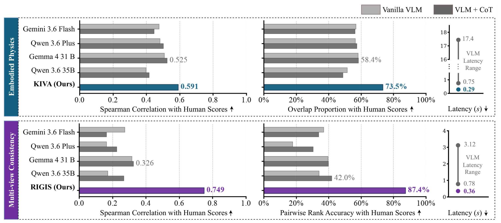

Physics checked with what the robot already knows
Robot video world models are usually scored as generic video generators, often by VLM judges that cannot check 3-D geometry or kinematics. RoboWorM instead checks them against the robot's known kinematic tree and its fixed camera rig.
- a
The benchmark holds 1,605 real episodes on single-arm, bimanual and humanoid robots with short and long-horizon tasks and one to four views.
- b
Without any VLM, KIVA checks kinematics within a view (+25.8% agreement with human hallucination labels over the best VLM) and RIGIS checks geometry across views (+130% Spearman correlation with humans).
- c
An audit of 9 acceleration methods on 3 world models and over 29,000 rollouts shows that faster videos can look right while breaking physics. KIVA and RIGIS find up to 2.3× speed-up with minimal quality loss.

The RoboWorM benchmark
Five public corpora (DROID, RoboChallenge, the AIST bimanual corpus, RoboCOIN and NVIDIA GR00T Teleop GR1) give six configurations over five robots and three morphologies, each with short Markovian and long non-Markovian tasks and up to four synchronized cameras.
509 instructions, 14 manipulation primitives
Horizon and footage
- 9.7 h
- of real video
- 1,605
- episodes
- ≤ 142 s
- per episode
- 15–30
- source FPS
§3.2Three world models, three ways of rolling out
§3.3Nine acceleration methods in three families
Deployment-aware physics auditing with KIVA and RIGIS
KIVA checks the robot's kinematics inside each view. RIGIS checks that the views of a multi-camera rollout agree on one scene and one fixed rig.

KIVA: Kinematic Invariant Violation Assessment
A diffusion reader trained on real teleoperation reads 3-D robot keypoints from the pixels. Links cannot change length and joints cannot teleport, so KIVA measures both and compares them with real footage.
RIGIS: Robotic Inter-view Geometry & Intrinsic-Extrinsic Stability
Cameras on a fixed rig see one scene and do not move. RIGIS lifts each view into 3-D with VGGT-Ω and checks whether the views agree where they overlap and whether the estimated cameras stay put.
Human alignment and cross-metric analysis
Two annotators, with expert adjudication, rated 291 single-view and 300 multi-view videos on a three-point scale. Four frontier VLMs judged the same videos three times each, zero-shot and with chain-of-thought.
Do KIVA and RIGIS align better with human judgment than VLM judges?
Yes. KIVA raises agreement with human hallucination labels from 58.4% to 73.5%, and RIGIS raises the Spearman correlation with human preferences from 0.326 to 0.749. The best VLM judge, Gemma 4 31B with chain-of-thought, stays below both.

The same clips, three judges
VLM: three runs of one judge per clip (Gemma 4 31B + CoT for the multi-view clips). KIVA bands use the per-morphology cuts of Appendix B.1. RIGIS bands are tertiles of the 100 rated clips per morphology, drawn for this page; the paper reports only rank correlation.
How do KIVA and RIGIS compare to VLMs in evaluation stability and efficiency?
VLM verdicts change between runs: the per-video score std ranges from 0.076 on embodied physics to 0.591 on multi-view consistency, and chain-of-thought adds heavy latency. KIVA and RIGIS are deterministic and take 0.289 s and 0.356 s.
Table D3. Agree: share of videos with identical scores across runs. Score std: mean per-video standard deviation on the 1–3 scale. Latency: seconds per video second.
How do existing metrics correlate with KIVA and RIGIS?
Motion Smoothness and Motion Amplitude Score capture only surface transitions; KIVA checks the kinematic constraints of the embodiment. Feature matching (MVC) and SLAM RPE fail under large viewpoint changes, while RIGIS stays close to human judgment (Figure 6a).
Long-horizon drift in video world models
How do video world models perform across morphologies and long horizons?
Ctrl-World attends across views and time explicitly; DreamGen sees a 2 × 2 tiled frame through plain self-attention. RIGIS picks up the difference on every multi-view comparison. KIVA degrades most in the two configurations with the deepest rollouts, single-arm DreamGen and DreamDojo.
(a) Multi-view tracks · RIGIS ↑
(b) Single-view tracks · KIVA ↓
Table 2. Medians under Markovian (Mkv) and non-Markovian (Non-Mkv) dynamics; bold is the better model per morphology. Single-view FVD is not comparable across models.
Within a clip, severity grows with rollout depth
In 130 of 193 multi-chunk clips the segment severity rises with the chunk index (mean ρ = +0.20, sign test p < 10−3), consistent with error accumulating over the rollout.
Table C4. Median rollout depth per clip against KIVA violation rate, Markovian vs. non-Markovian.
Acceleration trade-offs
How does acceleration trade off speed and structural integrity in video world models?
Caching holds up best: a 1.7× mean speed-up for a RIGIS change of −0.004, and it wins all 12 configurations. Its strongest member, WorldCache, averages 1.8× and reaches the benchmark-best 2.3× on DreamGen humanoid and single-arm multi-view. Token pruning loses 13.4% NR quality for only 1.2×, and sparse attention is limited by low attention runtimes.
Figures 5, C2 and C3. One point per method and world model. Thin dashed lines are each model's dense score; the labelled line is real video.
Limitations
BibTeX
@misc{roboworm2027,
title = {RoboWorM: Evaluating Movement Realism, Consistency and
Acceleration Affects in Embodied Video World Models},
author = {Anonymous},
year = {2027}
}